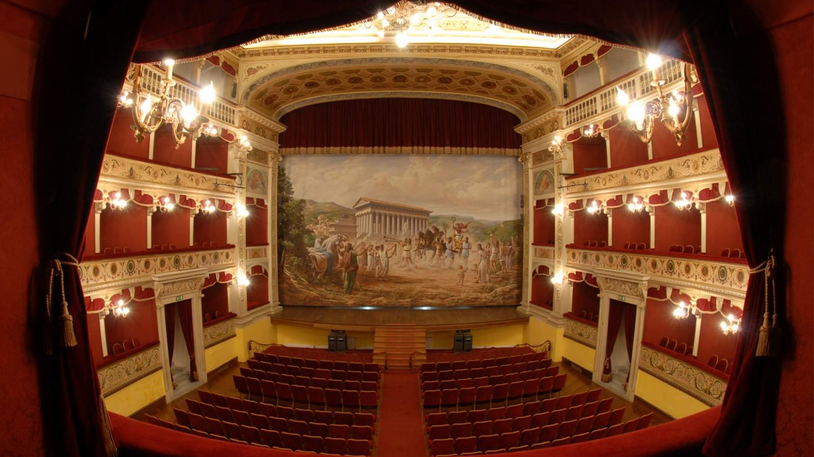

TEATRO PIRANDELLO
Il tempio della cultura agrigentina
Costruito nel XIX secolo e originariamente chiamato Teatro Regina Margherita, fu in seguito intitolato al grande scrittore Luigi Pirandello. L'interno è un gioiello architettonico, arricchito da eleganti decorazioni, palchi lignei e uno storico sipario che raffigura la fondazione mitologica dell'antica Akragas.